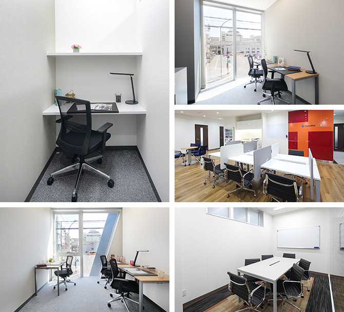

【個室レンタルオフィス】
オープンオフィス豊田
オープンオフィス豊田がNEW OPEN
オープンオフィス豊田は、トヨタ自動車本社のお膝元であり、名古屋市に次ぐ愛知県第2の都市42万の人口が集中する、豊田市の中心に位置します。名鉄「豊田市」駅からは徒歩5分、愛知環状線「新豊田」駅からは西口より徒歩2分というロケーションで、入居する新豊田ビルは2018年に竣工した新築ビルになり、共用部分も最新の設備が整ったセンターです。
オープンオフィス豊田が提供するオフィスサービス
-
 高速インターネット＜光ファイバー＞
高速インターネット＜光ファイバー＞
- 100Mbpsの光ファイバーによるブロードバンド環境をご用意しました。各部屋に配線済みですので、パソコンに繋げばすぐLAN経由で高速インターネットを利用出来ます。
-
 ネットワーク・カラーレーザープリンタ+スキャナー
ネットワーク・カラーレーザープリンタ+スキャナー
- ネットワークを利用して、各お部屋のパソコンから印刷できます。プリンタをご用意いただく必要もございません。
スキャナー機能も搭載しております。
-
 カラーレーザーコピー
カラーレーザーコピー
- フロア内にご用意してあります。カード方式でコピーが出来ますので、小銭の準備が不要です。
-
 ICカードキーによる入室管理
ICカードキーによる入室管理
- 専用ICカードを使ったホテル式のスマートシステムを用いて、セキュリティーを向上させています。
-
 ミーティングルーム（会議室）
ミーティングルーム（会議室）
- 商談・会議にご利用いただける共有スペースをご用意しています。インターネットで簡単に予約をしていただけます。
-
 無線LAN（WiFi）
無線LAN（WiFi）
- 共有スペースとミーティングスペースにて、無線LAN(WiFi)サービスをご利用いただけます。

オープンオフィス豊田の特徴

トヨタ自動車本社至近
サテライトオフィスに最適
豊田市の中心地
市役所ほか公共機関も集中するエリア
2路線利用可能、駅前の好立地
オフィス周辺のMap
オープンオフィス豊田近隣のスポット
- ■銀行
- 三菱東京UFJ銀行 豊田市店
三井住友銀行 豊田市店
百五銀行 豊田市店
十六銀行 豊田市店
豊田信用金庫 本店
- ■レストラン
- 割烹 なり田 （割烹）
ダイニングセラー1109 （イタリアン）
鉄板焼 煖 （ステーキ）
いわ井 （てんぷら） - ■ホテル
- ホテルトヨタキャッスル
名鉄トヨタホテル
センターホテルトヨタ
シティーホテル アンディーズ
豊田パークサイドホテル - ■レジャー
- アイレクススポーツクラブ Premia
コナミスポーツクラブ豊田 - ■映画館・エンターテイメント
- トヨタスタジアム
MOVIX三好
とよた科学体験館
オープンオフィス豊田の住所・アクセス
- 住所:
- 愛知県豊田市小坂本町1-5-5 出雲殿互助会豊田駅前ビル（旧YAMATO BLDG）2F
- 空港からのアクセス:
- 中部国際空港から豊田市（名鉄ホテル前）までバスで約85分
- 電車からのアクセス:
- 名鉄「豊田市」駅からは徒歩5分
愛知環状線「新豊田」駅からは西口より徒歩2分 - お車でのアクセス:
- 新豊田駅西口ロータリー
新豊田駅西交差点至近
オープンオフィス豊田のフロアマップ
2F

※フロア内は禁煙です。
※こちらはイメージ図となりますので、状況が異なる場合は現況を優先させていただきます。
- ◆初回納入金
- 利用料1ヶ月分の保証金
- ◆共益費
- 水道光熱費、ビル共益費、ゴミ出し、フロア・トイレの清掃、共有部分の消耗品代を含みます。